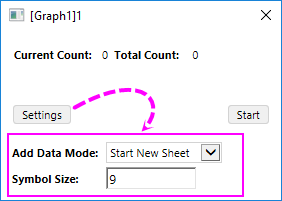
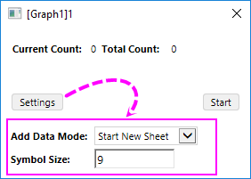

Diese Sammlung von Hilfsmitteln und menügesteuerten Operationen bietet Funktionen an, die hilfreich sein können bei der Untersuchung bestimmter "Was wäre wenn"-Szenarios.
Verwenden Sie das Hilfsmittel Daten zeichnen, um ein 2D-Punktdiagramm von Hand zu zeichnen. Ein verborgenes Arbeitsblatt mit den entsprechenden XY-Koordinatenwerten wird gleichzeitig erstellt.
Klicken Sie bei einem aktivierten Diagrammfenster auf die Schaltfläche Daten zeichnen  auf der Symbolleiste und ein Minidialog wird aufgerufen:
auf der Symbolleiste und ein Minidialog wird aufgerufen:

Hinweis: Standardmäßig sind die Optionen Datenmodus hinzufügen und Symbolgröße minimiert. Sie können auf die Schaltfläche Einstellungen klicken, um sie zu erweitern.
Sie können diese Option nutzen, um festzulegen, wie die von Ihnen gezeichneten Datenpunkte gespeichert werden sollen.
Die Symbolgröße kann verwendet werden, um die Größe der gezeichneten Datenpunkte festzulegen. Der Standardwert der Größe beträgt 9.
Wenn das Arbeitsblatt erstellt wurde, wird eine Schaltfläche Diagramm oder Arbeitsblatt im Bedienfeld des Hilfsmittels angezeigt, um die Fenster zu wechseln.
Informationen dazu finden Sie unter Ein Diagramm mit Hilfe der Schaltfläche Daten zeichnen erstellen. Dieses Verfahren funktioniert nur mit 2D-Punktdiagrammen.
Sie dürfen Datenpunkte von 2D-Punktdiagrammen nacheinander an beliebige Stellen innerhalb des Layers verschieben, um die Datenzeichnung neu zu erstellen. Dazu verwenden Sie den Menübefehl Daten: Datenpunkte verschieben. Weitere Informationen finden Sie im Abschnitt Einen Datenpunkt verschieben.
Hinweis:
|
Sie können individuelle Datenpunkte aus Ihrem 2D-Punktdiagramm löschen, indem Sie den Menübefehl Punkte löschen verwenden. Arbeitsmappendaten werden dementsprechend angepasst. Dieses Vorfahren funktioniert nur bei 2D-Punktdiagrammen. Weitere Informationen finden Sie im Abschnitt Einen Datenpunkt löschen.